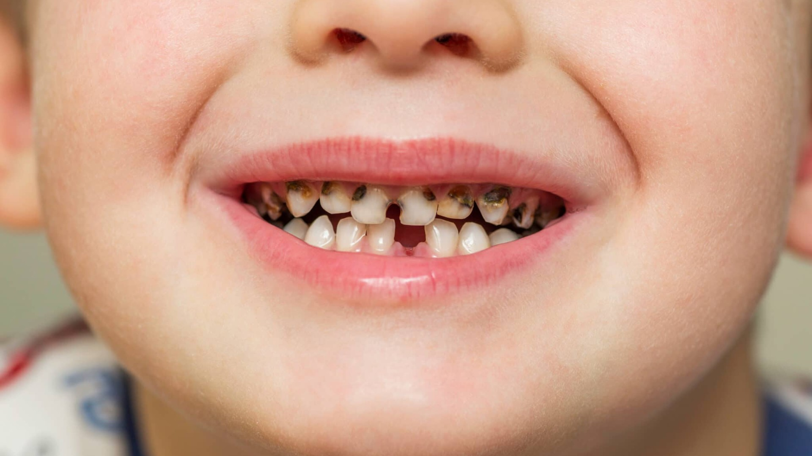
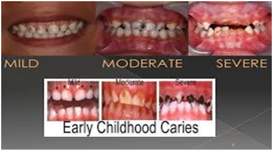

Early Childhood Caries
Early childhood caries, also known as nursing bottle caries, is a very common bacterial infection characterized by cavities that most often show up on a child’s upper front teeth but can also affect other teeth. It first appears as white spots near the gum line. These spots are hard to see at first, but if caught early, they can be stopped from progressing into cavities. As it gets worse, they can look like brown spots, holes, or broken teeth, which will require more involved procedures to fix. It is very important to get treatment early to stop the decay from getting worse.
Causes
One of the most significant causes of nursing bottle caries is when a child goes to bed with a bottle filled with milk or juice – anything except water. Bacteria in the mouth use these sugars as food, producing acids that attack the teeth. After repeated exposure, the teeth begin to decay. Nursing bottle caries usually affect children below the age of 6 years. If your infant falls asleep while breastfeeding, they are also at risk.
Symptoms:
A dull white discoloration appears along the gum line on the front upper teeth, indicating early decay.
Cavities may develop around the neck of the teeth in a circular pattern, signaling progressive damage.
In severe cases, the teeth may decay entirely, leaving behind only dark brown or black root remnants.
Treatment
Preventive Treatment:
Fluoride exposure using child-specific fluoridated toothpaste,
mouthwash, and fluoride application are effective ways to prevent
cavities.
Fluoride Application:
Professional fluoride application is recommended when white
lesions appear on the tooth surface. It prevents further
demineralization and halts cavity progression. Commonly used
solutions include 5% sodium fluoride varnish (NaFV; 2.26% F,
22,600 ppm F) and acidulated phosphate fluoride. This is typically
done for children under six years old.
Pit and Fissure Sealant:
A plastic resin applied to the grooves of the chewing surface to
prevent cavities. It is recommended for young primary and
permanent teeth as a preventive measure, even when discoloration
is not yet visible.
Diet Modification:
Food habits play a crucial role in the occurrence of Early
Childhood Caries (ECC). Monitoring your child’s diet and referring
to an appropriate food chart can help in prevention.
Therapeutic Treatment:
Restoration:
Fillings are performed when cavities are contained within the
walls of the tooth.
Crowns:
Used when a cavity breaks a tooth wall, ensuring protection and
restoration.
Root Canal Treatment:
If decay reaches the nerve, pulpectomy (root canal treatment) is
required. A crown is placed afterward for function and aesthetics.
Extraction:
Severely decayed teeth, reduced to root stumps, require
extraction. For young children, space maintainers help guide the
eruption of permanent teeth.
Treatment Charges:
Fluoride application: Rs 2,000 per arch
Pit and Fissure Sealant: Rs 500 per tooth
Filling: Rs 500 - Rs 1,000 per tooth
Root Canal Treatment: Rs 2,500 per tooth
Crown: Rs 2,500 per tooth
Extraction: Rs 900 per tooth
FAQ's
What do you mean by Early Childhood Caries?
Early Childhood Caries is one of the most common preventable dental diseases seen amongst young children in their milk teeth. It commonly presents as multiple decays seen in the upper teeth, making them brittle. Lower front teeth are usually protected by the tongue, hence much damage is not seen in them. The presence of multiple decays is due to prolonged contact between sugars in food and the bacteria present on the decayed surface of the teeth. It is caused by the following reasons:
- Frequent bottle feeding at night until they fall asleep.
What is the treatment for Early Childhood Caries?
At ARS Innovative Dental Solutions, we provide professional care in the form of preventive measures which are absolutely pain-free procedures:
- Topical application of Fluoride.
- Pits and fissure sealant for the back teeth so that they remain healthy.
We also provide permanent treatment solutions depending on the severity of the case:
- Glass Ionomer.
- Cement Fillings.
- Composite Fillings.
- Crowns.
- Root Canal Treatment.
- Extraction.
What home care should be taken to prevent further decay of the teeth?
- Make sure to clean your baby's teeth and gums after every meal, especially before going to sleep.
- Make use of fluoride-containing toothpaste to brush your child's teeth.
- Control or restrict food with high sugar content.
- Avoid sticky food with high sugar content, e.g., sticky chocolates.
- Let the kid chew on apples, guava, and high-fiber food like carrots which will make the teeth stronger.
- Avoid extended and repetitive use of a no-spill training cup.
- Avoid any kind of sticky food, lollipops, candies, etc.
- Ensure wiping baby’s gums or brushing their teeth before going to bed.
Is the Permanent Treatment solution painful?
These are absolutely pain-free procedures once the numbness has taken its effect. A local anaesthesia has to be administered for the numbness to take effect. In the case of extensive damage involving most of the teeth, our specialists might recommend the procedure to be done under conscious sedation or general anaesthesia.
When do we require conscious sedation or general anaesthesia to treat young children?
Conscious sedation and general anaesthesia are behavioral control techniques increasingly used in pediatric dentistry. Inhalation sedation utilizing nitrous oxide-oxygen has been a primary technique in the management of anxiety and dental fears. It is usually the technique of choice for pediatric dental conscious sedation, children with special needs, and for adults. The technique has an extremely high success rate coupled with a very low rate of adverse effects and complications.
Dental procedures under general anaesthesia are a therapeutic option for many patients, providing high-quality dental care when conventional dental treatment is not a viable option. If you are specifically looking for treatment under conscious sedation or general anaesthesia, you can always first consult your pediatrician to confirm if the child is fit for the same before meeting our pediatric dentist for a consultation.